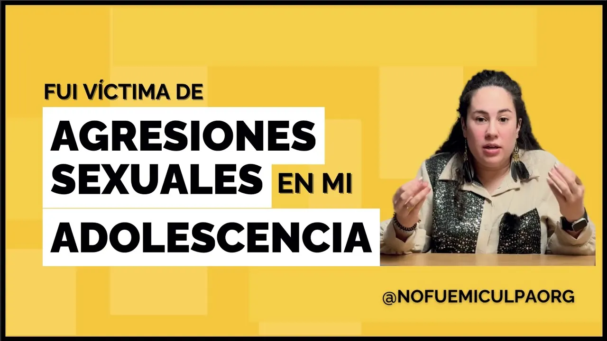
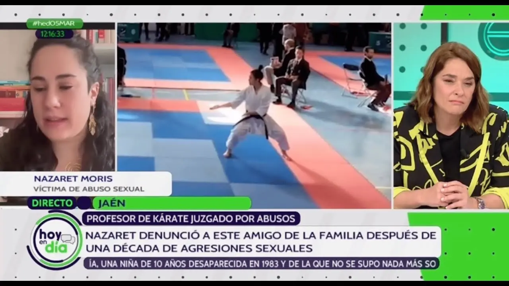
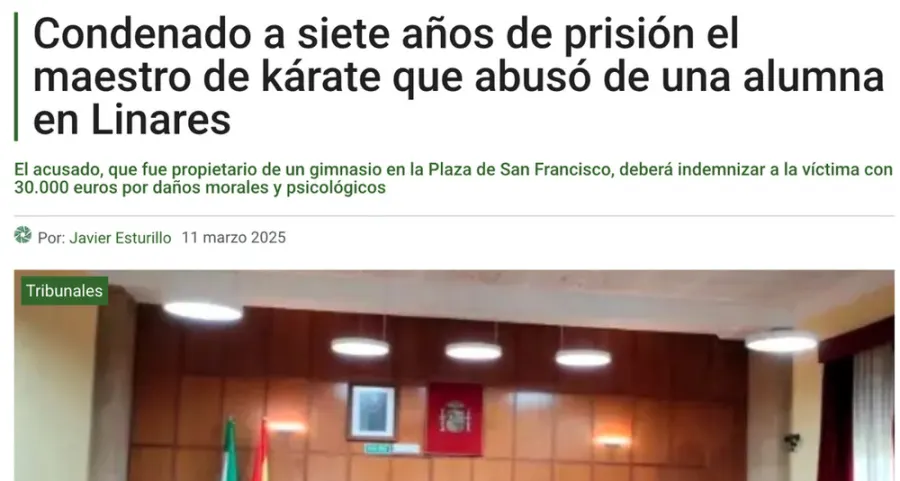
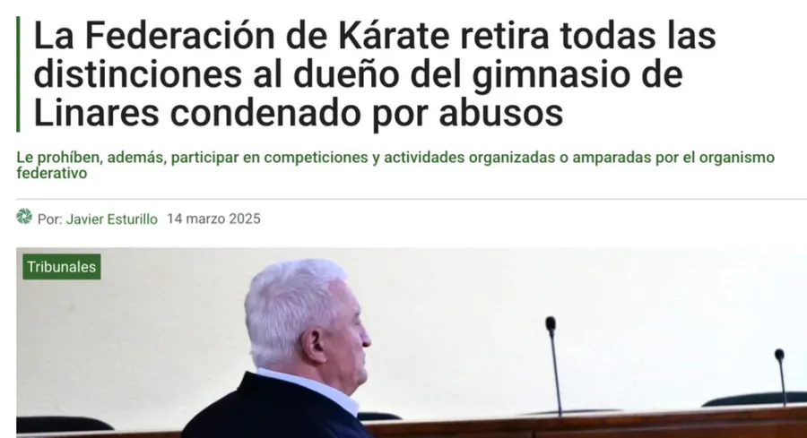
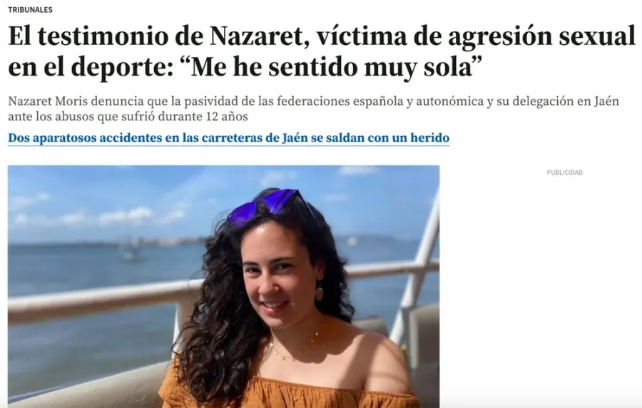
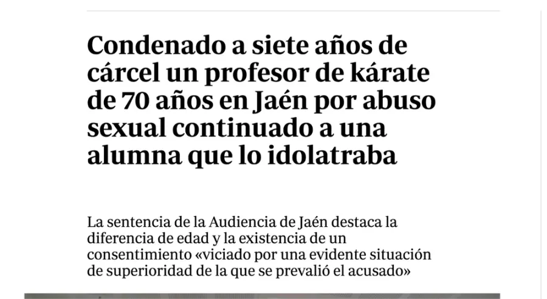
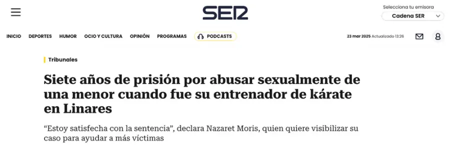

Sobre mí
Me llamo Nazaret Moris Rull y soy la fundadora de No Fue Mi Culpa ORG. Durante toda mi adolescencia fui víctima de agresiones sexuales por parte de mi maestro de kárate, cuarenta años mayor que yo, y al que quería como un padre.
Con 20 años, me atreví a ponerle fin a la situación, rompí toda conexión con mi agresor y comencé a ir terapia. Fue entonces, por primera vez, cuando me atreví a ponerle nombre a lo vivido. Y a denunciar. No fue fácil. A partir de ahí comenzó un proceso judicial que ha durado siete años. Siete años de espera, de dolor, de valentía sostenida. Hasta que, por fin, en febrero de 2025 mi agresor fue condenado.
Han sido muchos años de terapia, lágrimas y noches sin dormir, pero siempre supe que todo ese dolor, no podía quedarse solo en mí. A pesar de la culpa, el miedo y la confusión inicial, tenía claro que esta lucha tenía que servir para algo más: para ayudar a otras personas a no sentirse tan solas como yo me sentí.
Hoy soy profesora de Secundaria y Bachillerato, y trabajo cada día con adolescentes. Por desgracia, ya me he encontrado con casos de agresiones sexuales que se viven en silencio y con mucha vergüenza. Y es ahí donde también descubrí que mi experiencia tiene valor: porque haberlo vivido me permite escuchar y acompañar desde un lugar real. Porque a veces, solo otra víctima puede entender lo que duele, lo que paraliza y lo que cuesta hablar. Pero también, lo que libera contarlo.
Por eso estoy aquí. Porque hablar sana, visibilizar empodera y luchar transforma. Porque no fue mi culpa.

Mi historia en los medios
-
Hoy en Día · Canal Sur

La primera vez que hice público mi testimonio
Entrevista en el programa Hoy en Día de Canal Sur, antes de la sentencia.
¡Qué arropada me sentí por Toñi Moreno y todo el equipo!
05/03/2025
-

El Nuevo ObservadorTras 7 años, llegó la palabra que tanto esperé: condenado.
La primera noticia que hizo pública la sentencia. Yo me enteré de la resolución en la sala de espera del médico antes de una ecografía, ¡qué momento!
-

El Nuevo ObservadorTuve que alzar la voz muchas veces para que, por fin, hubiera un pronunciamiento.
La reacción institucional no llegó sola, ni pronto. Fueron necesarias visibilidad, presión y una historia que no dejara margen para mirar a otro lado.
Si queréis saber cómo se logró, podéis descubrirlo en mis redes sociales.
-

Jaén HoyLo que una sola voz puede lograr
Tras la publicación de la sentencia, la RFEK no contactó conmigo ni quiso pronunciarse públicamente. Costó varios días de lucha mediática que huyeran de la cobardía moral.
Os animo a que entréis en las RR.SS. para conocer la historia de cómo lo conseguimos.
-

ABCSiete años de lucha. Siete años de condena.
La noticia de la sentencia en el ABC.
Siete años de proceso, miedo, terapia y lucha hasta ver reconocida mi verdad.
Un paso histórico para mí y para quienes aún callan.
-

Cadena SERLa verdad, reconocida por la justicia
La noticia de la sentencia en Cadena Ser.
La condena llegó. Y con ella, la validación de todo lo que durante años muchos pusieron en duda.
Lo cuenta la prensa, pero detrás hay una historia humana mucho más profunda.